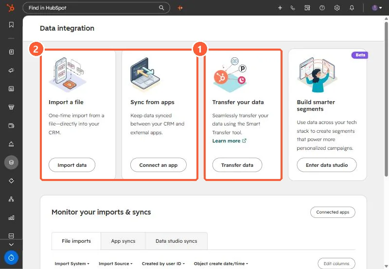

Short answer
Data Management, Data Integration, Transfer data starts HubSpot Smart Transfer. It audits the other app, maps its objects and properties to HubSpot, and lets you choose which properties, pipelines, currencies and users to create before moving data. It can also transfer HTML email templates from Account Engagement (Pardot), Marketo, Mailchimp and ActiveCampaign. Afterward, its cleanup step finds empty properties and helper workflows the transfer created.
1. Where


2. The steps
- Audit: HubSpot reads the other app's objects and properties and proposes a mapping.
- Configure: you choose which properties, pipelines, currencies and users get created.
- Transfer: data moves, sometimes with helper workflows. For Zoho, for example, it backfills create dates and record IDs.
- Clean up: mark and remove empty properties and helper workflows afterward.
3. When to use it
Use Smart Transfer when the source app is supported. For spreadsheets or unsupported systems, plan the load yourself. See planning a migration from spreadsheets and import limits.